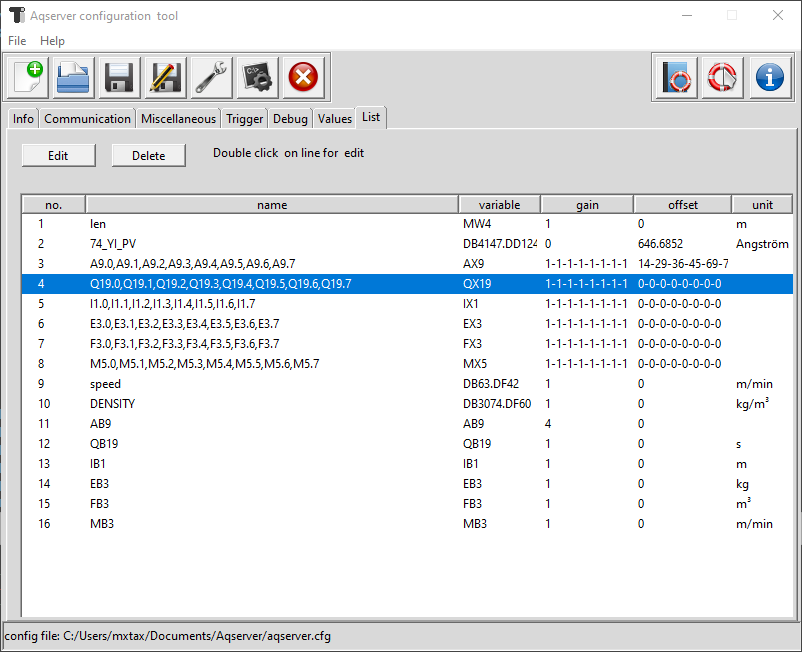

Aqconfig - configuration for data acquisition server¶
The program edits the configuration for an acquisition tool for Siemens Simatic S7 PLCs. It was written in Python with Tkinter as GUI library. To build the GUI a GUI Builder named PAGE was used.
- Homepage
- Contact
<aqserver at taxis-instruments dot de>
- Author
Michael Taxis <michael at taxis-instruments dot de>
Copyright of this document:
- Copyright
Copyright of the program:
- Copyright
Please note that soft- and hardware designations and brand names of their respective companies used in this document are generally subject to trademark protection or patent protection.
About¶
With this program you can edit configuration files for the data aqcuisition program aqserver. Its GUI is written in Python and Tkinter. To build the GUI a GUI Builder named PAGE was used.
This was my first (finished) Python (3) application with a GUI. I always use my (private) projects to learn something new. Lots of web pages and lots of Stack overflow entries have been visited to find solutions to my problems. Thanks a lot to the community of coders and developpers.
Main interface¶
Menu and toolbar¶

Menu and toolbar show the same functions. left part of the toolbar shows the File menu functions, right part shows the Help menu functions.
- File
New

Clears all fields for a fresh config file
Open …

Opens an existing configuration file
Save

Save the open file
Save as …

Lets you save the open file under a new name
Settings

Opens a new dialog window, where you can adjust the program settings
Save *.bat

Saves a batch file next to the config file, that you can use to start Aqserver directly with this config-file
Quit
- Help
Help contents
Context help

switches the mouse pointer to a arrow with question mark. Click on a element in the interface and help for this element will be displayed in the browser
About

Shows an About box for the program


{kind=link}
{kind=link}
Information tab¶

In this tab we can enter some general information about the data recording, to identify the situation later on
- Customer:
here we enter the customers name or some other information
- Creator:
enter your name
- Machine:
information about the machine (e.g. type, year, machine number)
- Order:
enter your order number
- Remarks:
enter a description for the recording, e.g. what was the problem, how did you solve it, result
Communication tab¶

Here we enter the communication details, how to reach the PLC
- Demo:
if checked, we run the program in demo mode, no real communication, random values will be created
- IP address:
enter the IP address of the PLC
- Rack no.:
enter the rack number of the PLC
- Slot no.:
enter the slot number for the CPU in the rack, can be found in HW Config of Step7
Miscellaneous tab¶

- datafile prefix
here you enter the name of the datafile, archives will additionally have a timestamp in the name.
- storage path
here you can enter the path where you want the archives to be stored. With the button a dialog willl open where you can pick a directory
With this dialog you can select the storage path
- use….
With this checkbox you can select whether the archives should be stored under a directory structure by day
- scantime
enter the scan interval in milliseconds
Trigger tab¶
Trigger (Wikipedia):¶
In physics, a trigger is a system that controls the data collection of an experiment. Often it is not possible or not important to continuously record all measured values in experiments. In this case only a part of the measured values is read out and based on this, it is decided when the remaining data should be read out.
In our case we use the trigger to start a new datafile.

- trigger checkbox:
switch trigger function on or off
- trigger signal:
choose the trigger from available signals with the combobox
combobox with trigger signals
- trigger condition:
choose the comparison operator for the trigger
- trigger value:
value the trigger signal is compared with
- pre-trigger:
time before the trigger, where signals will go into new file
- post-trigger:
time after trigger, where signals will go into old file
Note
Pre- and post-trigger are used to get an overlap between old and new datafile
Debug tab¶

- Level
select the debugging level (for aqserver), where “1 - INFO” is the most verbose
- Files to keep
Give a number of logging files that will be kept.
Values tab¶
Values¶
- Area of values
select the area of the value from the following
- Data
value is from the data area, you have to select also a datablock number and the address
- Output
value is from the output area, you have to select also the address. Note that datablock number is greyed out.
- Input
value is from the input area, you have to select also the address. Note that datablock number is greyed out.
- Flag
value is from the flag area, you have to select also the address. Note that datablock number is greyed out.
- Timer
value is from the timer area, you have to select also the address. Note that datablock number is greyed out. Also the only allowed format is Int 16 bit
- Counter
value is from the counter area, you have to select also the address. Note that datablock number is greyed out. Also the only allowed format is Int 16 bit
- Data block number
enter / select the number of the datablock
- Address
enter the address of the value
- Format
select the format of the value with the radio buttons
- Real 32 bit
value is a real (float) number , with a length of 32 bit (REAL) Note that bottom notebook switches automatically to the value tab.
- Dint 32 bit
value is a integer number, with a length of 32 bit (DINT) Note that bottom notebook switches automatically to the value tab.
- Int 16 bit
value is a integer number, with a length of 16 bit (WORD) Note that bottom notebook switches automatically to the value tab.
- Int 8 bit
value is a integer number, with a length of 8 bit (BYTE) Note that bottom notebook switches automatically to the value tab.
- Bool
value is a boolean value (TRUE/FALSE). Note that bottom notebook switches automatically to the bool tab.
Value¶
- Name
The name for the value
Note
Names have to be unique. No duplicate entries are allowed in the list!
- Gain
The value coming from the PLC is multiplied with this value This can be used if several signals have to be compared but have different range (but maybe the same shape). Leave 1.0 for no effect (default setting).
- Offset
This value is added to the result of (value coming from the PLC multiplied by gain) Use this to shift the value up or down. Leave 0.0 for no effect (default setting)
- Unit
Enter a unit of the measured value, e.g. m³, bar, psi…
Bool¶
Smallest value that can be read from the PLC is a Byte. So in order to get a boolean value we have to get a byte and then separate it to 8 booleans.

- name for every bit
The name for the bits (also unique)
- Gain for every bit
Gain does not make much sense, but we have it anyway. Leave 1 for no effect (default setting)
- Offset for every bit
This value is added to the result of (value coming from the PLC multiplied by gain). Can be useful if several boolean values are in one graph, to separate them. Leave 0 for no effect (default setting)
Note
There is no unit for a boolean value
Buttons¶
- Clear
This button clears the entry fields and sets some defaults
- Edit
This button switches to the list tab, sop you select a value/row for edit
- Save
Changes to a selected value will be saved to the list. If no value was selected previously , then button is greyed out
- Add
Values entered to the fields will be added to the end of the list
Duplicate names¶
All value names must be unique. If a name entered to the Name field or to the Name0..7 field for the boolean is already in the list, a dialog will open and show the duplicates. Enter a different name for the shown ones and save/add again.

List tab¶
- Edit
Edit the selected value/row from the list. Will open this value in the values tab
- Delete
Deletes the selected value from the list. Has to be confirmed.
Note
Deleting a value from the list can destroy the display of a datafile in KST2, because it is based on the order of the values in the datafiel. When we change the order by deleting a value from the list, then display will not work anymore.
Settings¶
- Button Path to Aqserver.exe
Here we have to select the directory where the Aqserver.exe is located.
Default location is “C:Program Files (x86)Aqserver”
- Label Path to Aqserver.exe
The label shows the directory
- Language combobox
Select language for the program from the combobox
- Ok
Click to accept settings
- Cancel
Click to close the dialog and leave previous settings
Changelog¶
05 October 2020
0.1.0alpha
first version
Licensing¶
Aqserver is distributed as python source code or Windows setup program under Lesser General Public License version 3.0 (LGPLv3)
Basically this means that you can distribute your commercial software linked with Aqconfig without the requirement to distribute the source code of your application and without the requirement that your application be itself distributed under LGPL.
A small mention to the project or the author is however appreciated if you include it in your applications.
Disclaimer of Warranty¶
THERE IS NO WARRANTY FOR THE PROGRAM, TO THE EXTENT PERMITTED BY APPLICABLE LAW. EXCEPT WHEN OTHERWISE STATED IN WRITING THE COPYRIGHT HOLDERS AND/OR OTHER PARTIES PROVIDE THE PROGRAM “AS IS” WITHOUT WARRANTY OF ANY KIND, EITHER EXPRESSED OR IMPLIED, INCLUDING, BUT NOT LIMITED TO, THE IMPLIED WARRANTIES OF MERCHANTABILITY AND FITNESS FOR A PARTICULAR PURPOSE. THE ENTIRE RISK AS TO THE QUALITY AND PERFORMANCE OF THE PROGRAM IS WITH YOU. SHOULD THE PROGRAM PROVE DEFECTIVE, YOU ASSUME THE COST OF ALL NECESSARY SERVICING, REPAIR OR CORRECTION.
IF ANYONE BELIEVES THAT, WITH THIS WEBSITE OR WITH AQCONFIG PROJECT SOME COPYRIGHTS HAVE BEEN VIOLATED, PLEASE EMAIL US, AND ALL THE NECESSARY CHANGES WILL BE MADE.